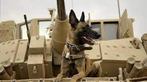

MAX
Trailer:
Sinopsis:
Es una película animada que narra la historia de Maximiliano Kolbe y los increíbles retos que tuvo durante la invasión Nazi a Polonia en la Segunda Guerra Mundial. Kolbe fue enviado a Auschwitz, el campo de concentración Nazi, como castigo por ayudar y proteger a los Judíos. En su último sacrificio ofreció cambiar su lugar con un condenado a muerte quien tenía esposa e hijos, al hacer esto, sacrificó su vida. La película se cuenta a través de una historia contemporánea de un encuentro entre un hombre mayor, Gunter, y un adolescente rebelde llamado DJ. La historia del Padre Maximiliano le enseña al joven sobre el sacrificio y el amor.